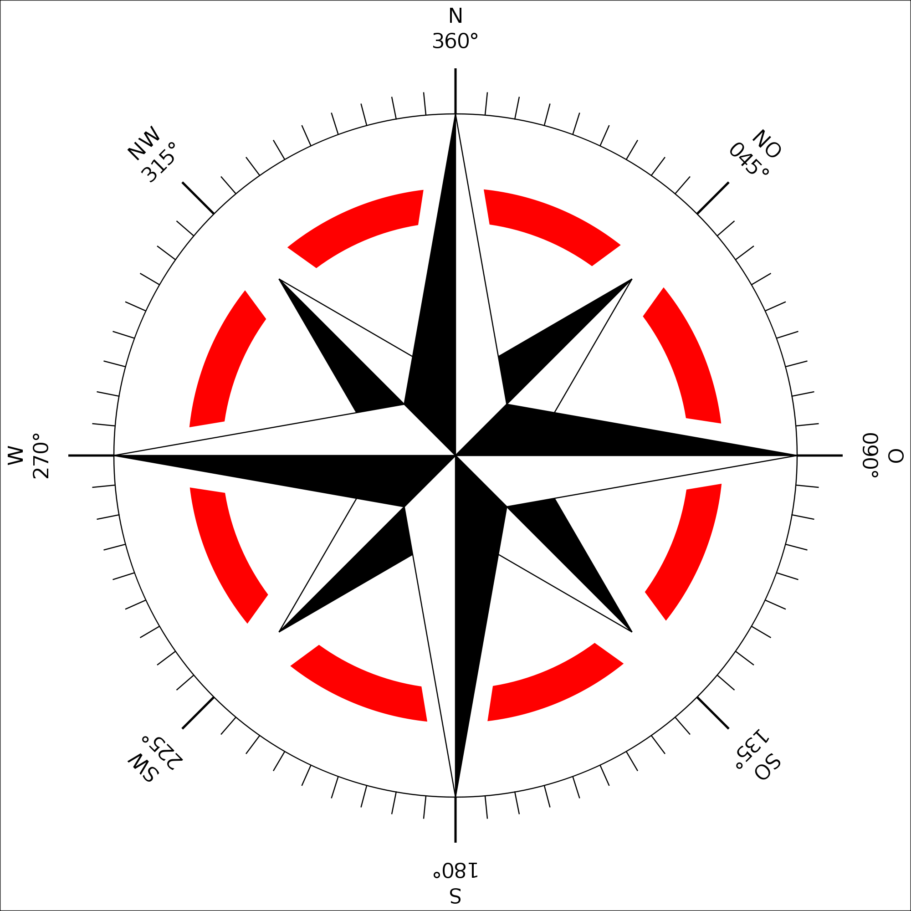
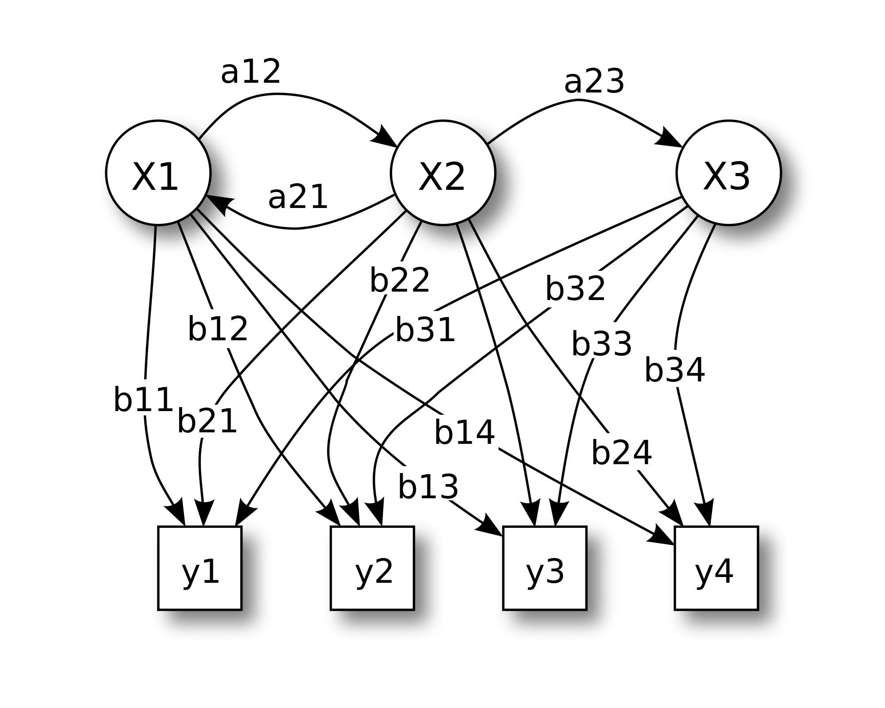
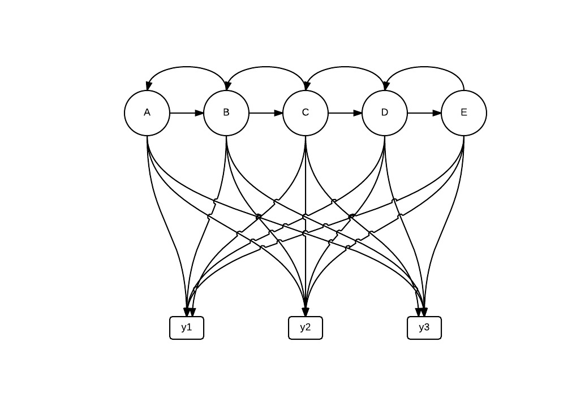
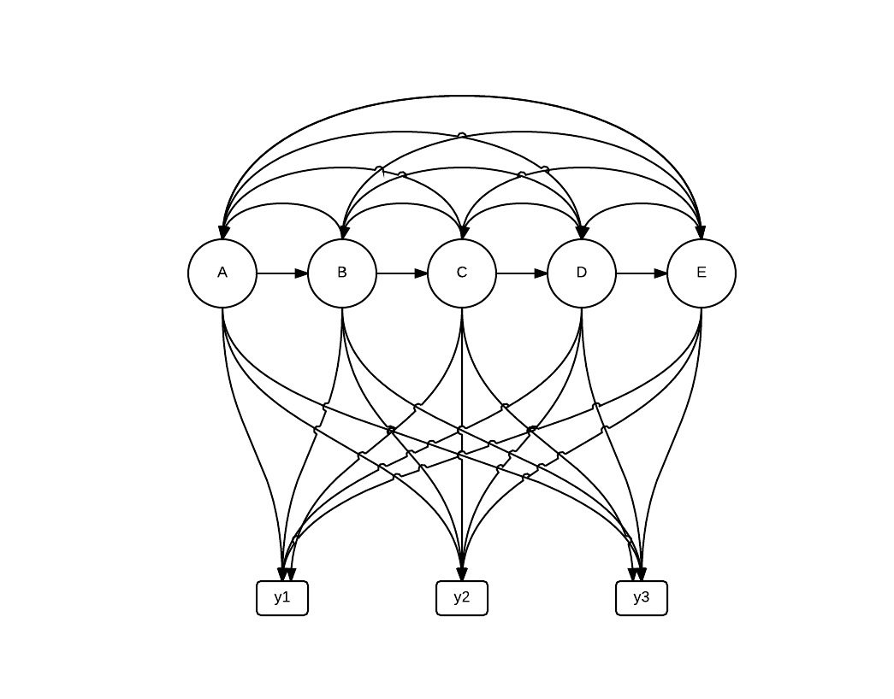

Gesture recognition using userMedia
ZOSIA 2015
Roman Bartusiak
How?
- Capture data from webcam
- Motion detection
- Motion discretization
- Gesture recognition
Capture data from webcam: Tracking.js
Don't reinvent the wheel
-
OpenSource library
-
Uses userMedia to process webcam data
-
Provides friendly API
Motion detection: Optical Flow Horn-Schunck
- Works on black-and-white images
-
Assumptions
-
Pixel color (brightness) do not change during movement
- Movement of neigbour pixels is similar
-
Motion detection: Optical Flow Horn-Schunck

I(x+u,y+v,t+1)=I(x,y,t)
Motion discretization
Optical flow returns motion for each pixel, steps that are taken to discretize whole image motion:
- Calculate average motion of whole image
- Calculate angle of motion vector
- Discretize angle using 'compass rose'

Gesture recognition: HMM
Hidden Markov models

- hidden - we don't know anything about inner representation
Gesture recognition: HMM
-
Connections between states and observations can be represented as matrices
-
Rows and columns represents from and to of connection
-
Value is a probability of transition or emmision
- Connections between states and observations can form different graphs
- Tested with all to all and serial connection models
- all to all requires more data samples
-
Viterbi algorithm to calculate path and learn probabilities
Gesture recognition: HMM
 